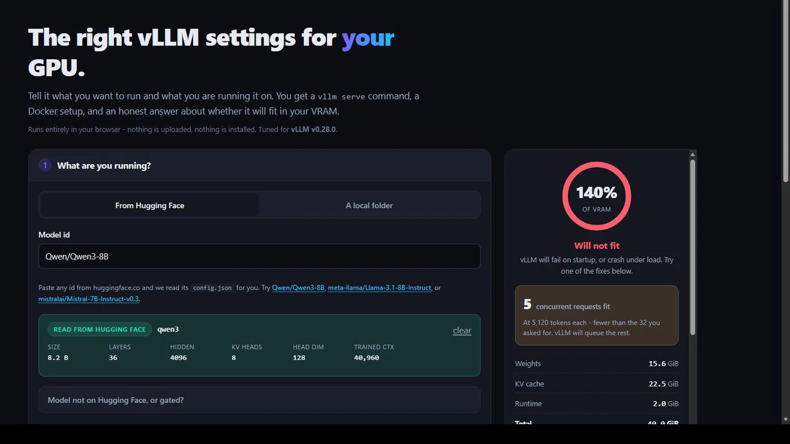
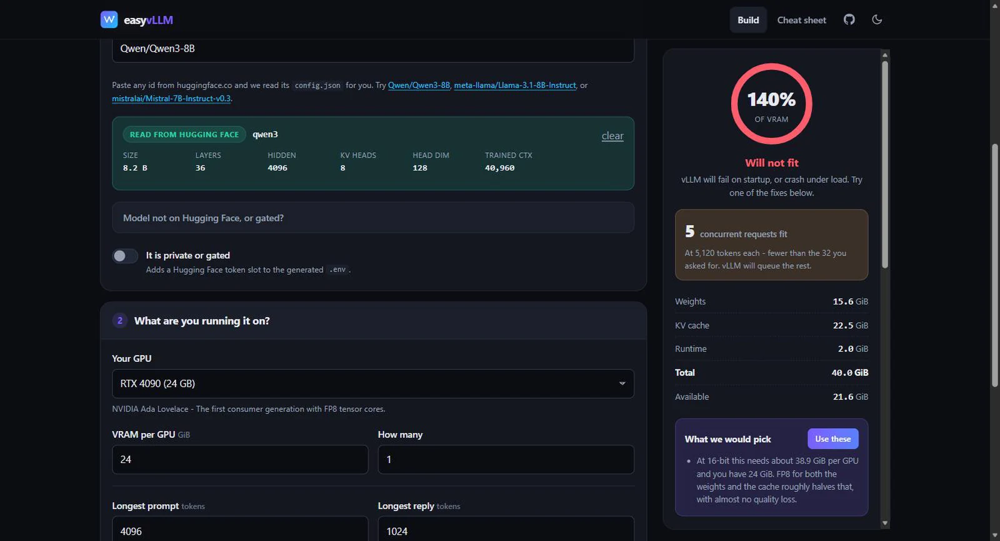
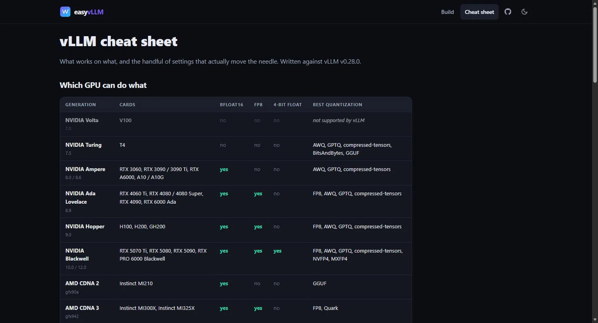
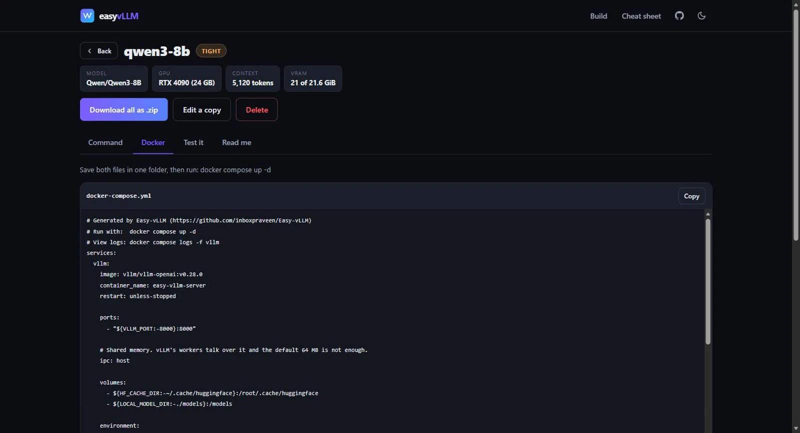

Easy-vLLM
Project Overview
Easy-vLLM answers the two questions everybody has before deploying a model with
vLLM:
will this fit on my GPU, and which flags do I actually need. You type a Hugging
Face model id, pick your card, and get back a working vllm serve command, a
docker-compose.yml that matches your hardware, and an honest verdict on whether the
thing will start.

It runs entirely in the browser. No install, no account, no server — the only network
request it makes is to huggingface.co for the public config.json of the
model you named. It is Apache-2.0 and hosted on GitHub Pages.
Why I Built This
vLLM is the best open-source inference engine I have used, and vllm serve exposes
over two hundred flags. That is not a criticism — the surface area is the point. But it
means the first hour with vLLM is spent reading a help text that cannot tell you the one thing
you need to know, which is what your card can do.
The answers genuinely change per GPU. FP8 is the single best thing you can do on an RTX 4090 and simply does not exist on a 3090 — one generation apart. AWQ and GPTQ, the two formats every tutorial reaches for, have no ROCm kernels at all, so half the advice on the internet is wrong if you are on an MI300X. A V100 cannot run current vLLM at all, and the error you get does not say so in those words.
I had watched people — and myself — download 140 GB of weights to discover a configuration that was never going to load. The feedback loop is brutal: a typo in a flag costs you a model download and a ten minute startup before anything tells you it was wrong.
The Problem
Three things make vLLM configuration harder than it looks, and none of them are vLLM's fault.
The KV cache, not the weights, is usually what kills you. Everyone sizes a deployment by parameter count. But an 8B model in bfloat16 is about 15.6 GiB of weights — and at 5,120 tokens of context across 32 concurrent requests, its KV cache is 22.5 GiB. The part nobody budgets for is larger than the part everybody does.
Parameter counts are lies for Mixture-of-Experts models. A "30B-A3B" model advertises 3B active parameters. All 30B still sit in VRAM. Size for the active count and you will be out of memory by a factor of ten.
The flags move. Between the version I first wrote this against and today,
--swap-space and --max-num-partial-prefills were removed outright,
--async-scheduling and --disable-cascade-attn became defaults,
bitsandbytes moved out of the main package into a plugin, and --kv-cache-dtype fp16
became float16. A generator that is not maintained against the current CLI produces
commands that fail on startup.
How It Works
Nine modules, no framework, no build step. Every keystroke recomputes the whole estimate synchronously — it is arithmetic, and it is fast enough that debouncing would only add latency.
model id ──▶ config-parser.js ──▶ huggingface.co/<id>/resolve/main/config.json
│ (CORS, read-only, public)
▼
parameter count, KV shape, detected quantization
│
GPU preset ──▶ hardware.js ──▶ capability flags: bf16 / fp8 / fp4 / marlin
│ │
▼ ▼
estimator.js validators.js recommendRecipe()
weights + KV + runtime what will not run what to use instead
│ │ │
└───────────┬───────────┴─────────────────────┘
▼
command.js ──▶ vllm serve …
artifacts.js ──▶ docker-compose.yml, .env, tests, README
zip.js ──▶ one download, no dependency
The centre of it is hardware.js: one table mapping thirteen GPU generations to what
their kernels support. Everything else is derived from it — which quantizations appear as
recommended, which are greyed out as unsupported, which Docker image you get, and what the tool
suggests when your configuration does not fit. Adding a new card is one line; adding a new
generation is one entry with its capability flags.
Counting Parameters Properly
The usual shortcut for model size is 12 × layers × hidden². It is
off by several percent on dense models and badly wrong on everything else, which matters when the
whole point is to tell someone whether 15.6 GiB fits in 24.
So the parser adds up the actual tensors: attention projections respecting grouped-query attention, the MLP or expert blocks, and embeddings counted once when the model ties them. For Mixture-of-Experts models it counts every expert, because every expert is resident.
| Model | Published size | What the parser computes |
|---|---|---|
| Qwen3-8B | 8.2 B | 8.19 B |
| Mistral-7B-Instruct-v0.3 | 7.25 B | 7.25 B |
| Llama-3.1-8B-Instruct | 8.03 B | 8.03 B |
Those three cases are pinned in the test suite. If a change to the counting logic moves any of them, the build fails.
It Tells You What to Change
A verdict on its own is not much use. The more valuable output is the number underneath it — how many concurrent requests the leftover VRAM actually supports at the context length you asked for — and an ordered list of fixes, each with a button that applies it.

The recommendation engine climbs a ladder and stops at the first rung that fits: nothing, then an FP8 cache, then FP8 weights, then 4-bit. It reaches for the cheapest change first, because halving the KV cache costs no quality while dropping the weights to 4-bit does.
Getting this right took a correction. The first version compared only the weights against total VRAM, so it would cheerfully print "no reason to quantize" next to a verdict that said "will not fit" — because the KV cache, the thing that actually overflowed, was not in the comparison. The engine now takes the cache as an input, and a test asserts the recommendation can never contradict the verdict.
The Hardware Table Is the Product
The part people bookmark is the cheat sheet: which generation supports what, and which quantization to reach for on each. It is generated from the same table the wizard uses, so the documentation cannot drift away from the behaviour.

| Generation | bfloat16 | FP8 | 4-bit float | Reach for |
|---|---|---|---|---|
| Volta — V100 | No | No | No | Unsupported by current vLLM |
| Turing — T4 | No | No | No | AWQ or GPTQ, and float16 |
| Ampere — 3090, A100 | Yes | No | No | AWQ, GPTQ, compressed-tensors |
| Ada — 4090, L40S | Yes | Yes | No | FP8 |
| Hopper — H100, H200 | Yes | Yes | No | FP8 |
| Blackwell — 5090, B200 | Yes | Yes | Yes | NVFP4 |
| CDNA 3 — MI300X | Yes | Yes | No | FP8 or Quark — not AWQ |
| CDNA 4 — MI355X | Yes | Yes | Yes | Quark, MXFP4 |
What It Generates
Six files, and the compose file is the one that earns its keep. Picking the wrong container image
is the most common way a first deployment fails, so the generator branches on vendor: NVIDIA gets
the usual device reservation block, AMD gets /dev/kfd and /dev/dri
passed through plus group_add: video, Intel gets the render node, and CPU gets
neither.

| Hardware | Image the generator picks |
|---|---|
| NVIDIA, CUDA 12.8+ | vllm/vllm-openai |
| AMD, ROCm 6.3+ | vllm/vllm-openai-rocm |
| Intel GPU | vllm/vllm-openai-xpu |
| No GPU | vllm/vllm-openai-cpu |
Tags are pinned rather than :latest, the generated README explains every choice the
wizard made, and the whole folder downloads as a zip written by about a hundred lines of
zip.js — store-only entries, no compression library, no dependency.
Why I Deleted the Server
Versions 1 and 2 were a Flask app. Pydantic schemas, a SQLite history table, Jinja templates, nine JSON endpoints, a pytest suite. It worked. It was also, in hindsight, absurd: a tool whose entire purpose is telling you whether you can run something, that first requires you to clone a repo, make a virtualenv, install four packages and start a server on port 5000.
Nothing it did needed a server. The memory estimate is arithmetic. The command builder is string
concatenation. The history was a list of small JSON blobs. So v3 deleted the backend entirely:
every Python module was ported to a browser ES module, SQLite became localStorage,
Jinja templates became template literals, and pytest became Node's built-in test runner.
| v2 — Flask | v3 — static | |
|---|---|---|
| To use it | clone, venv, pip install, run | open a link |
| Model config | download config.json, drag it in |
fetched from the Hub as you type |
| History | SQLite on the server | localStorage, per browser |
| Estimate latency | debounced HTTP round trip | synchronous, per keystroke |
| Dependencies | Flask, Pydantic, Jinja2, pytest | none |
| Hosting | somebody's machine | GitHub Pages |
The migration also removed the feature I was most attached to and least willing to defend: the
drag-and-drop config.json upload. Hugging Face serves config.json with
permissive CORS headers, which I verified end to end before committing to the approach, so the
browser can just read it. Typing Qwen/Qwen3-8B now does what dragging a downloaded
file used to. The dropzone still exists, but only as the fallback for gated repos and local
models — which is the only place it was ever really needed.
Tech Stack
Front end
Browser APIs
Domain
Engineering
How This Is Different
There are VRAM calculators, and there are config generators. The gap this fills is between them: a calculator tells you a number but not what to do about it, and a generator emits flags without checking whether your card can run them.
| Easy-vLLM | VRAM calculators | vLLM docs | |
|---|---|---|---|
| Counts MoE experts correctly | Yes | Usually not | N/A |
| Knows what your GPU cannot run | Yes — blocks it | No | Scattered across pages |
| Emits a runnable command | Yes | No | Examples only |
| Picks the right container image | Yes, per vendor | No | Manual |
| Tells you what to change | Ordered fixes, one click | No | Prose |
| Needs anything installed | No | Varies | N/A |
What Shipped
- 31 GPU presets across NVIDIA, AMD, Intel and CPU, from an RTX 3060 to a GB300 and an MI355X.
- 13 GPU generations with capability flags driving every recommendation and every block.
- Live
config.jsonfetch from the Hugging Face Hub as you type. - Exact parameter counting, including full expert counts for MoE models.
- Six generated files, with vendor-correct Docker Compose.
- A cheat sheet page generated from the same data the wizard uses.
- 99 tests on Node's built-in runner, with no dependencies at all.
My Contribution
Sole author. Design, the hardware capability model, the memory maths, the vLLM CLI research, the migration off Flask, the test suite and the CI. Easy-vLLM is a helper for vLLM, not a fork of it — all credit for the engine belongs to the vLLM project and its contributors.
Challenges & Learnings
A generator is only as good as its last upgrade. Auditing the current CLI turned up flags the old version was still emitting that vLLM had removed — the generated command would have failed at startup. The lesson was to make that class of bug testable: there is now a test that turns on every option at once and asserts that a list of removed flags never appears in the output. Correctness against a moving upstream has to be a fixture, not vigilance.
Advice that contradicts itself is worse than no advice. The recommendation engine printing "no reason to quantize" beside a "will not fit" verdict was the sharpest bug in the project, and it came from a genuine modelling error: two features answering the same question from different inputs. Making the verdict an input to the recommendation, rather than a parallel computation, is what fixed it structurally.
Test the restore path with non-default values. Saved settings restored fine in every check I ran, because every check used a single GPU. With four, the tensor-parallel value silently collapsed back to 1 — the dropdown was rebuilt with only one option before the saved value was written into it, so the assignment was dropped on the floor. Defaults hide entire categories of bug.
Browsers make you honest about failure. Private-browsing modes do not return
empty from localStorage; they throw. Every read and write needed a guard, and the
generate path needed a fallback so that someone with storage blocked still gets the files they
just asked for rather than a confusing redirect.
Hugging Face answers 401 for repos that do not exist. It cannot say "no such repo" without leaking whether a private one exists, so a typo and a gated model look identical from outside. The error message has to cover both, and lead with the likelier one.
What's Next
A shareable-URL mode, so a configuration can be sent to a colleague as a link rather than described in a message. Then throughput estimates alongside the memory ones — tokens per second is the other question people ask, and it is harder, because it depends on kernels rather than arithmetic.
Longer term, the GPU table wants to be community-maintained. Adding a card is one line and adding a generation is one entry, which was a deliberate design goal: the long tail of hardware is not something one person can keep current.
Closing Note
The thing I would keep from this project is the deletion. Removing the server made the tool better on every axis that mattered — faster to use, faster to run, free to host, and impossible to have "broken locally". The Flask version was not wrong, but it charged a setup cost for a job that was always just arithmetic and a table.
Type a model, pick a card, get a command that works.